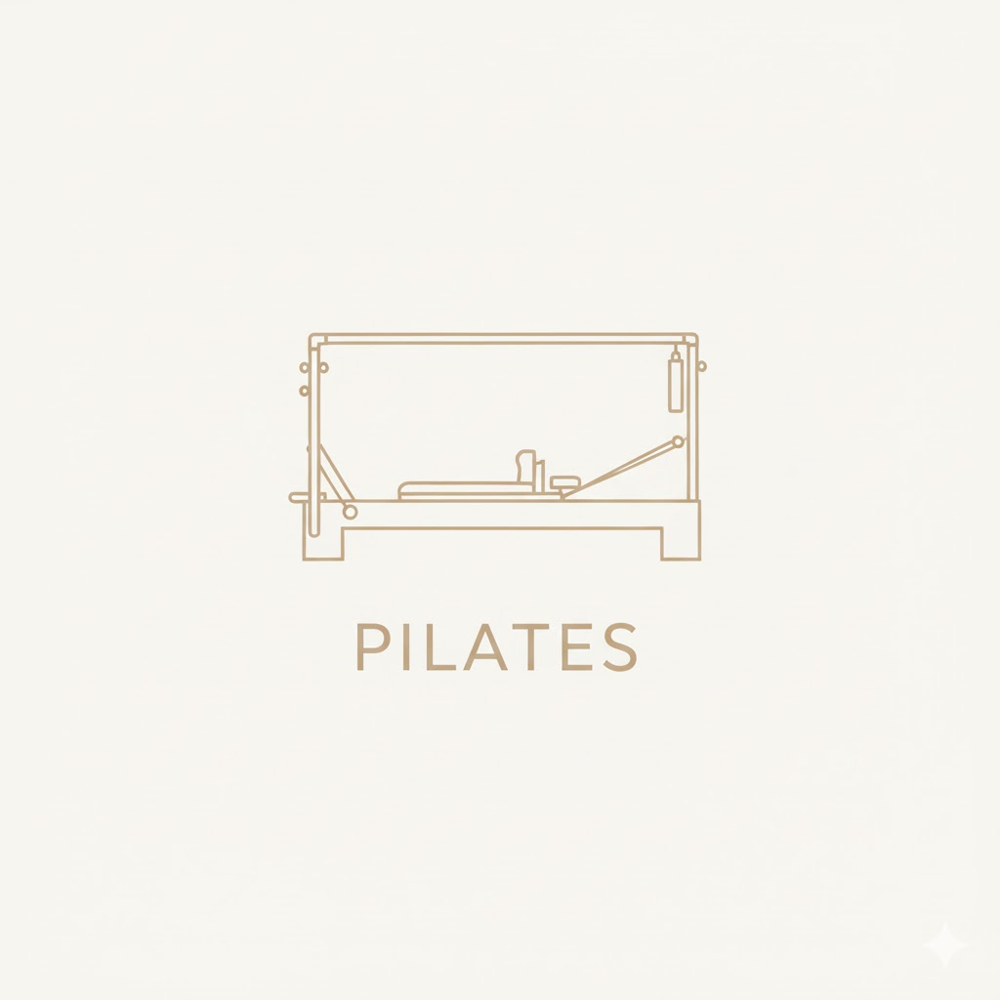
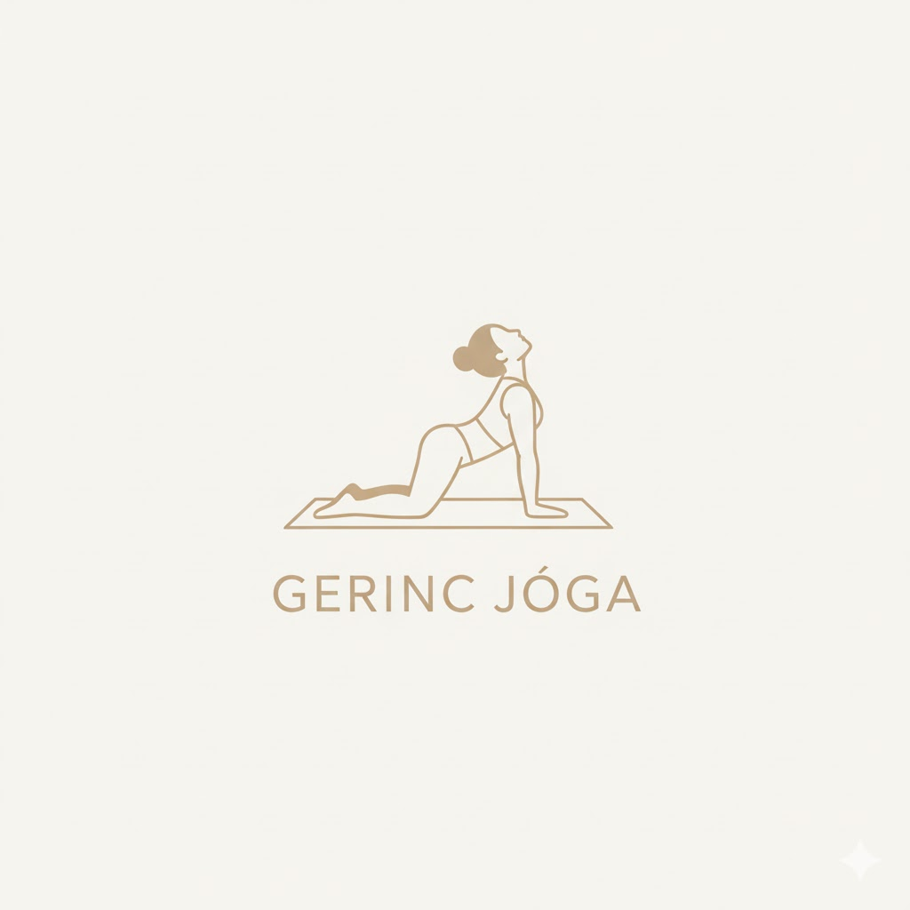

Óratípusok
Kezdő Jóga
Lassú, vezetett órák kezdőknek.
Megtanuljuk az alapvető ászanákat,
a helyes légzéstechnikát, és a biztonságos gyakorlást. Tökéletes kiindulópont a jóga világába.
 Foglalás
Foglalás
Pilates
Erősítő és tartásjavító gyakorlatok.
Fejlesztő gyakorlatok, melyek a core izmokra fókuszálnak. A stabil törzsizomzat segít megelőzni a hátfájást és javítja a test kontrollját.

FoglalásGerincjóga
Kímélő torna a hát egészségéért.
Célja a gerinc menti izmok nyújtása és erősítése. Ideális ülőmunkát végzőknek és mindazoknak, akik csökkenteni szeretnék a hátfájdalmat.

Foglalás